Agile Team Charter
Project purpose, team roles, responsibilities, shared values and communication agreements.
Explore Team Charter →CAPE PENINSULA UNIVERSITY OF TECHNOLOGY · PRP372S
Second-Hand Textbook Swap
Agile Digital Portfolio · Project Presentation 3
Litha Owethu Mazibuko
Project Facilitator / Scrum Master
WELCOME
Book Swap SA is a student-focused project designed to help students at the Cape Peninsula University of Technology discover, buy, sell and exchange affordable second-hand textbooks.
The project aims to address the high cost of academic learning materials, improve access to textbooks and encourage the sustainable reuse of educational resources.
This individual Agile Digital Portfolio presents evidence of project planning, teamwork, user requirements, sprint activities and project progress.
It also demonstrates my personal learning and professional development as the Project Facilitator / Scrum Master for Book Swap SA.
Each of the five assessed Agile sections contains supporting evidence and a personal reflection using the STAR Method.
Project purpose, team roles, responsibilities, shared values and communication agreements.
Explore Team Charter →Student requirements, original Trello user story evidence and planned development activities.
Explore User Stories →The team's Trello backlog containing 54 task cards across seven planned sprints.
Explore Product Backlog →Sprint objectives, planned activities, task organisation and Trello evidence.
Explore Sprint Backlog →Original dated logbook entries, project activities, challenges and lessons learned.
Explore Agile Logbook →Supporting project documents, including the Book Swap SA Brand Guide.
Explore Documentation →Through Book Swap SA, I developed a deeper understanding of how Agile methodologies support project planning, communication and teamwork.
The Team Charter established responsibilities, user stories identified student needs, the Product Backlog organised planned work, Sprint Backlogs structured activities and the Agile Logbook recorded project progress and challenges.
My role as Scrum Master / Project Facilitator helped me understand the importance of communication, accountability, task coordination, collaboration and continuous improvement.
SECTION 01 · EVIDENCE + REFLECTION
The Agile Team Charter establishes the foundation for effective collaboration among Book Swap SA team members.
It documents the project's purpose, shared objectives, assigned responsibilities, communication arrangements and expected standards of teamwork.
Book Swap SA aims to provide a student-focused platform where CPUT students can discover, buy, sell and exchange affordable second-hand textbooks.
The project promotes access to academic resources and encourages environmentally responsible textbook reuse.
| Team Member | Assigned Role | Responsibilities |
|---|---|---|
| Litha Owethu Mazibuko | Project Facilitator / Scrum Master | Support Agile practices, facilitate stand-ups, monitor progress and encourage effective collaboration. |
| Samkelo Mahlangu | Product Owner / Content Lead | Support backlog priorities, project requirements and student-centred product planning. |
| Coben Maistry | Frontend Developer | Develop web interfaces, search functionality and responsive layouts. |
| Angelia Van der Westhuizen | UI/UX and Quality Assurance Lead | Support interface design, usability and quality assurance. |
| Ongeziwe Raqa | Deployment and Documentation Lead | Support deployment, repository maintenance and project documentation. |
Our team charter documents communication through WhatsApp, virtual check-ins, weekly progress discussions and GitHub collaboration.
Trello was used to organise project activities and improve visibility of planned tasks.
Planned project goals included a responsive homepage, textbook searching and filtering, improved access to listings and deployment through GitHub Pages.
Additional improvements such as a wishlist, user guide and administrative functionality were proposed.
These goals describe planned functionality and do not independently verify that every feature was completed.
The original Agile Team Charter supports the documented project purpose, team structure, responsibilities and communication arrangements.
View Original Agile Team Charter PDF ↗Book Swap SA involved five team members with different responsibilities. Clear working agreements were necessary to support collaboration throughout planning and development.
As Project Facilitator / Scrum Master, my assigned responsibility was to support Agile working practices, facilitate stand-ups and monitor sprint progress through the logbook.
I reviewed the responsibilities and communication arrangements documented in our Team Charter. I considered how these agreements supported progress discussions, task ownership and collaboration.
I learned that effective Agile leadership depends on communication, accountability, shared expectations and mutual respect.
In future projects, I would encourage regular Team Charter reviews and clearer documentation of decisions and blockers.
SECTION 02 · EVIDENCE + REFLECTION
User stories describe system requirements from the perspective of people who will use the platform.
In Book Swap SA, user stories help communicate student needs and connect those needs to planned development tasks.
Our original Trello board contains a card titled:
Sprint 5: Day 37 — Develop Search and Filter Functionality
As a student, I want to search and filter textbook listings so that I can quickly find books that match my academic needs.
The following criteria describe expectations that could be used to evaluate this functionality.
These acceptance criteria are proposed evaluation criteria. The original screenshot does not independently verify implementation or testing.
These screenshots provide original evidence of the user story and related sprint planning activities. Click a screenshot to view it at full size.

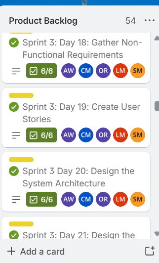

During Sprint 5, the Trello board documented a user requirement for searching and filtering textbook listings. This requirement focused on helping students locate books relevant to their academic needs.
As Scrum Master / Project Facilitator, my assigned responsibility was to support communication, task coordination and progress visibility within the team.
I reviewed the documented user story and examined how the student's needs could be translated into development activities and acceptance criteria.
This helped me understand the relationship between user requirements and organised development work.
I learned that user stories help teams communicate what users need, while acceptance criteria help define expected outcomes.
In future projects, I would encourage regular story refinement and evidence-based progress reviews.
SECTION 03 · EVIDENCE + REFLECTION
The Product Backlog provides an organised record of requirements and activities planned for the Book Swap SA project.
Our team's Trello board contains 54 day-based task cards organised across seven planned sprints.
| Sprint | Focus |
|---|---|
| Sprint 1 | Project initiation and business planning |
| Sprint 2 | Business plan development |
| Sprint 3 | System analysis and design |
| Sprint 4 | UI/UX design and prototype |
| Sprint 5 | Core system development |
| Sprint 6 | Testing and quality assurance |
| Sprint 7 | Finalisation and submission |
The following 19 original Trello screenshots document different areas of the Book Swap SA Product Backlog. Click an image to view it at full size.
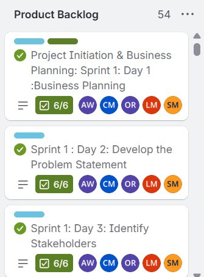


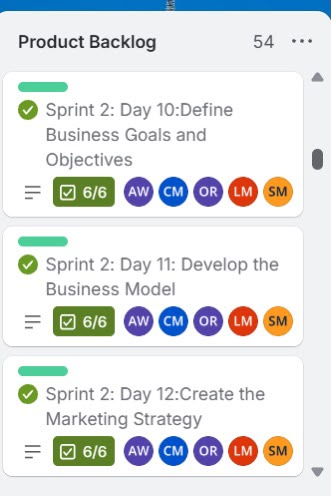


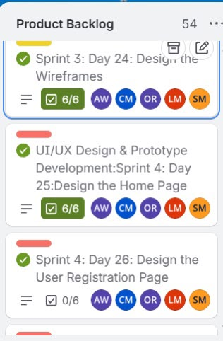

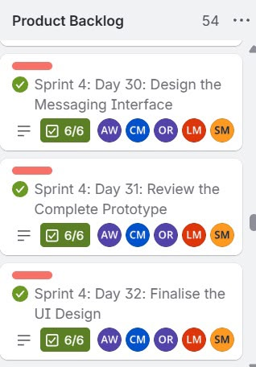
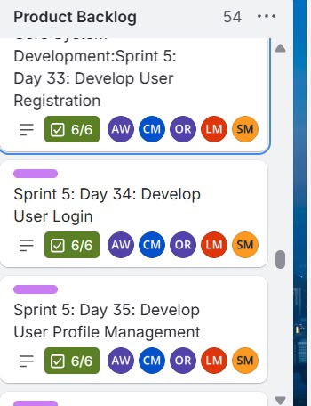


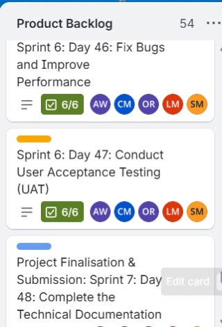
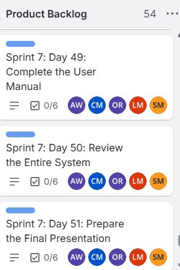
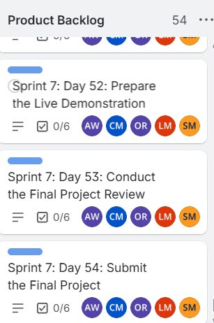
View the Original Book Swap SA Trello Board ↗
Book Swap SA involved multiple planning, design, development, testing and documentation activities. The team organised 54 day-based Trello task cards across seven planned sprints.
As Project Facilitator / Scrum Master, my assigned responsibilities involved supporting the Agile process, communication and progress visibility.
I examined the Trello Product Backlog and how early planning activities related to later development and testing tasks.
I considered the importance of clear descriptions, task ownership and accurate status information.
I learned that backlog organisation improves transparency and supports coordination between team members.
In future projects, I would encourage regular backlog refinement, clearer task descriptions and consistent progress updates.
SECTION 04 · EVIDENCE + REFLECTION
The Sprint Backlog organises work planned for a particular sprint. It helps team members understand objectives, activities and assigned responsibilities.
Problem statement, stakeholder identification, market research, competitor analysis, SWOT analysis and value proposition.
Mission, vision, business goals, marketing, operational planning, financial planning and risk analysis.
Functional requirements, user stories, system architecture, ERD, UML and wireframes.
Homepage, registration interface, dashboard, textbook listings, search interface, messaging designs and prototype reviews.
Registration, login, user profiles, textbook listings, search and filtering, messaging and integration.
Functional testing, bug fixing, performance improvements and user acceptance testing.
Project documentation, presentation, demonstration, final review and submission preparation.
These selected screenshots provide original Trello evidence of planned activities associated with the seven project sprints.
Book Swap SA was organised into seven planned sprints with different objectives, activities and dependencies.
My assigned Scrum Master responsibilities involved supporting coordination, communication and progress monitoring.
I reviewed sprint-related Trello cards and considered how task ownership, dependencies, blockers and next steps could be monitored within the Agile process.
I learned that effective sprint planning requires realistic goals, clear communication and accurate progress information.
In future projects, I would encourage regular progress discussions, clearer sprint goals and documented sprint-review outcomes.
SECTION 05 · EVIDENCE + REFLECTION
The Agile Logbook records dated project activities, progress, challenges, planned work and opportunities for improvement.
The original Book Swap SA records cover three reporting periods in July and August 2026.
The original logbook records describe preparation and presentation of the Book Swap SA business proposal.
Challenges included limited preparation time and technical difficulties during the presentation.
The original records describe discussions about project requirements, user stories, backlog improvements, task allocation and project planning.
These activities highlighted the importance of clear responsibilities and realistic task allocation.
The records describe project discussions, Trello reviews, planning updates and feedback.
These activities demonstrated the importance of keeping responsibilities and progress information visible.
The following eight screenshots provide original dated logbook evidence. Click on any screenshot to view its full-sized version.
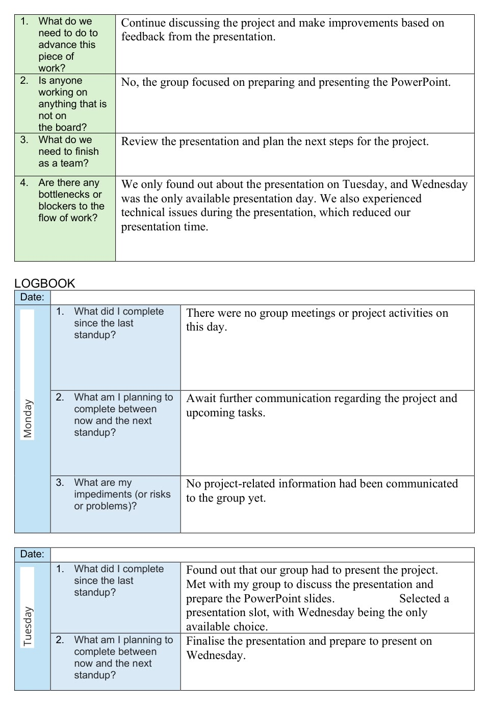
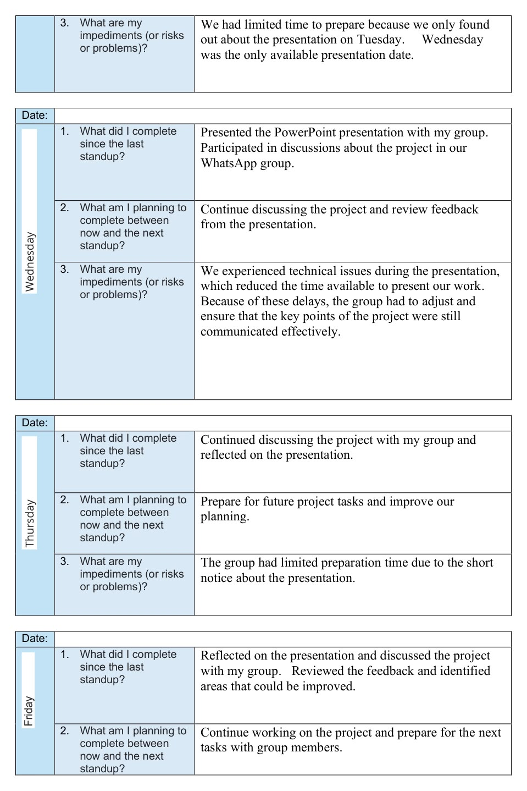


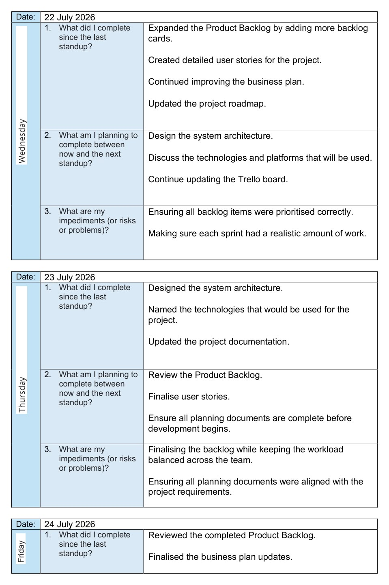
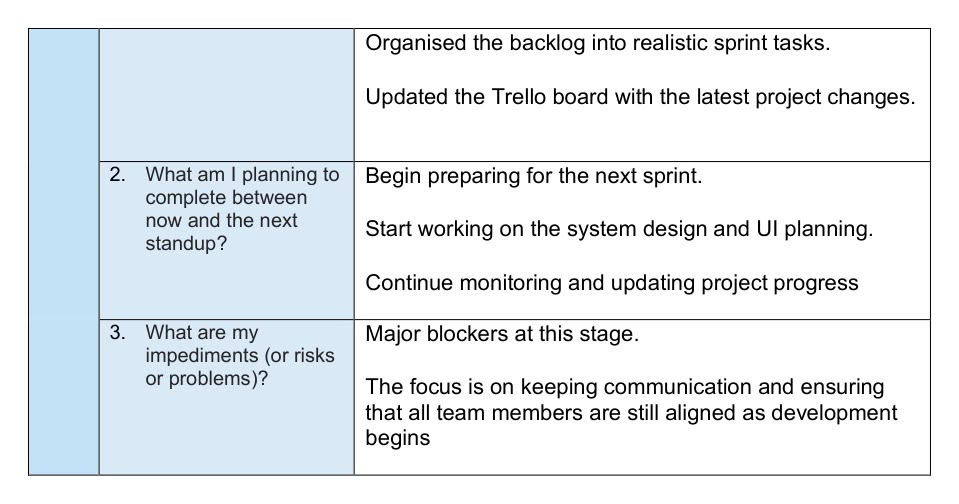
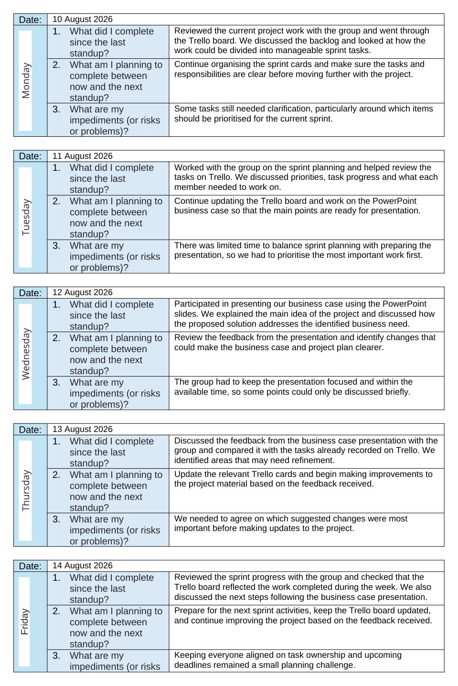

The July and August Agile Logbook entries documented project presentations, requirements planning, backlog organisation, progress reviews and challenges.
My assigned responsibility as Scrum Master / Project Facilitator included supporting team communication and monitoring sprint progress through the logbook.
I reviewed the dated logbook records and compared the documented activities with planning information from Trello.
I considered the importance of consistently recording activities, challenges, blockers and next steps.
I learned that accurate records and regular progress reviews support transparency, accountability and teamwork.
In future projects, I would encourage more consistent dated updates, clearer decisions and documented follow-up actions.
SUPPORTING PROJECT MATERIAL
Project documentation provides important information about the planning, design and development of Book Swap SA.
These supporting documents provide additional project context and do not replace the five required Agile artefacts.
The Book Swap SA Brand Guide documents the intended visual identity of the project.
It provides guidance on:
The Brand Guide PDF must be uploaded to the documentation folder for this link to work.
The Brand Guide is relevant to Sprint 4, which included UI/UX design and prototype development.
Shared design documentation helps establish consistent visual standards and supports communication among project members.
Sprint 4 focused on interface design and prototype planning. Consistent visual guidelines were relevant to the development of a unified interface.
As Scrum Master / Project Facilitator, my assigned responsibility was to support project communication and coordination.
I connected the Brand Guide to Sprint 4 design activities and considered how shared documentation could improve collaboration and consistency.
I learned that shared documentation supports communication, consistency and effective collaboration.
In future projects, I would encourage teams to maintain organised and regularly updated documentation.
Supporting project materials and evidence can also be accessed through my GitHub repository.
Access Complete GitHub Repository ↗ ← Back to Home